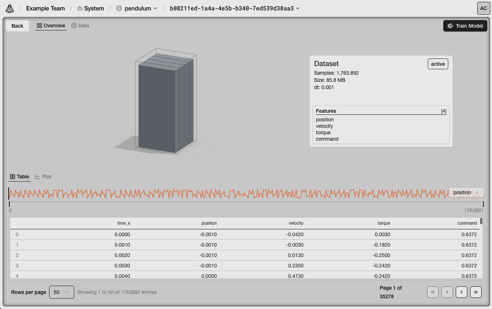
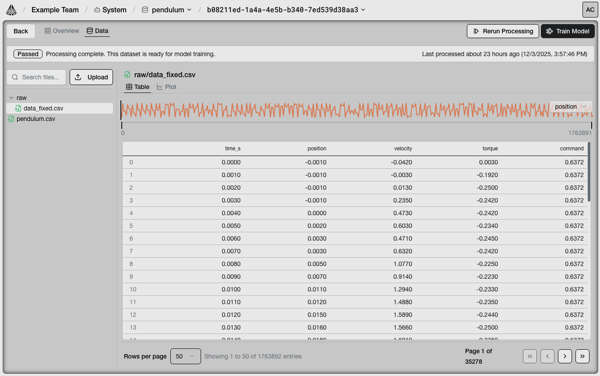

Datasets
Viewing a dataset
{kind=link}

The detailed object view of datasets (and any object) can be accessed in multiple ways:
Select the object from the “Select” breadcrumb in the topbar.
Click on the name of the object on the node in the System Overview.
Click on the node in the System Overview to open the Inspector, then click “Open Object View” under Actions.
Open the object view for a dataset.
Raw Datasets
Raw datasets are uploaded datasets that have not been processed for AI training. A raw dataset must be processed successfully to prepare the data for training an AI model. A raw dataset will have the status “Raw”.
You can view a dataset’s data in the “Data” tab. Data is viewable via the Table or the Plot. If your data is divided across multiple files, you can select different files via the file explorer on the left hand side.
If you would like to quickly view a specific section of data, utilize the scrollable timeline above the table/plot. Select a feature you wish to see a preview of in the timeline via the dropdown menu on the right hand side of the timeline.
Toggle the visibility of different features of your dataset in the plot view by using the X-Axis/Y-Axis checkbox controls on the left hand side under the file explorer.
Processing a dataset for AI training
{kind=link}

To process a dataset for AI training, click the “Process for Training” button in the top right corner of the Data tab of the detailed object view. This will initiate a validation process to ensure data is formatted correctly for AI model training. The status of the process is visible via a header section that appears above the table/plot. If errors occur, you will be alerted via this header.
A dataset that failed to process will have the status “Failed”. A dataset that successfully processed for AI training will have the status “Active”. If a dataset has successfully processed, an Overview tab will become available and a “Train Model” button will appear.
Fixing dataset processing issues
Datasets may have any the following issues that may cause errors when processing for AI training.
Time column is not monotonically increasing.
Time column has inconsistent time deltas.
Time column contains missing value(s).
Time column has value(s) that cannot be parsed as datetime.
Time column contains non-numeric value(s).
Column contains missing value(s).
File is empty.
Individual dataset values are editable via the table view. Complex issues may require you to troubleshoot and fix locally and then reupload. Your datasets can be downloaded via the file explorer. Datasets can be reuploaded by dropping in a new file or clicking the upload button.